Actual approved and legacy CAD. Tool props and pitch dimensions are illustrative candidates. Full swept clearance and production compatibility remain unresolved. Orthographic framing is a G0 proposal, not runtime acceptance.
Camera and source registry | Checks | Tool conventions
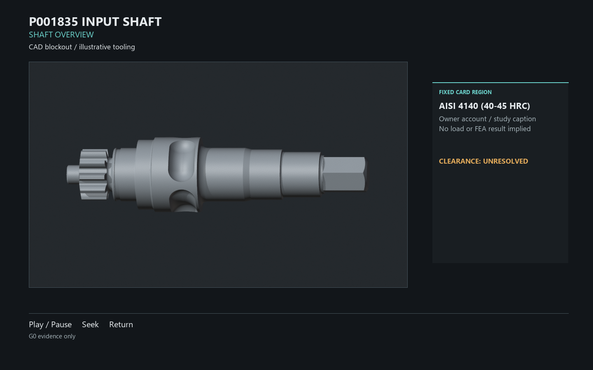
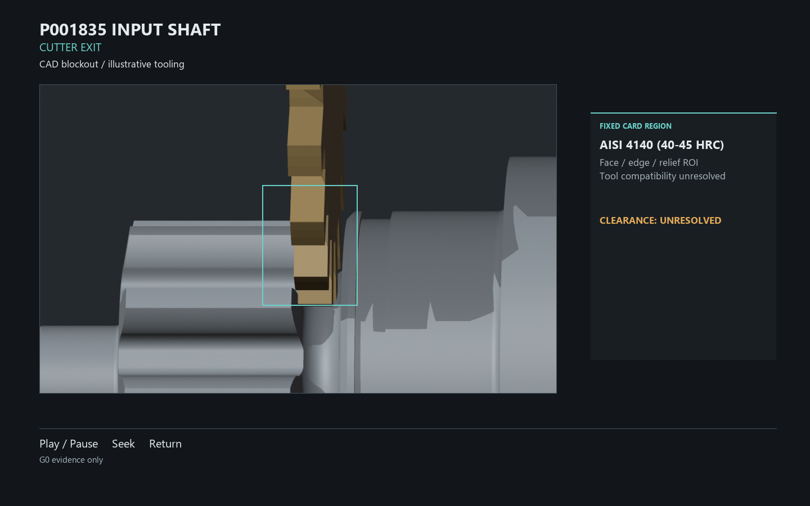
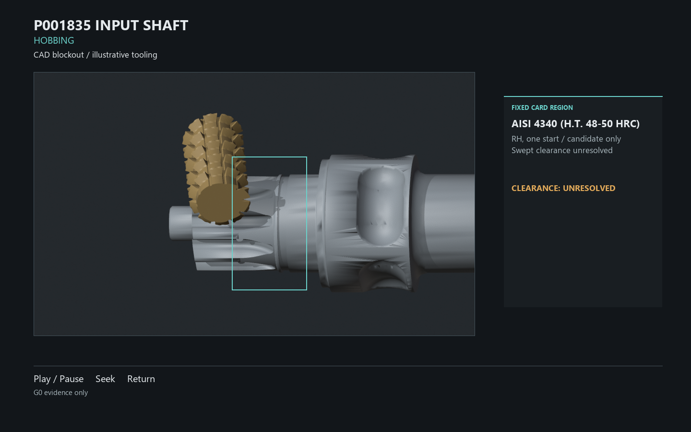
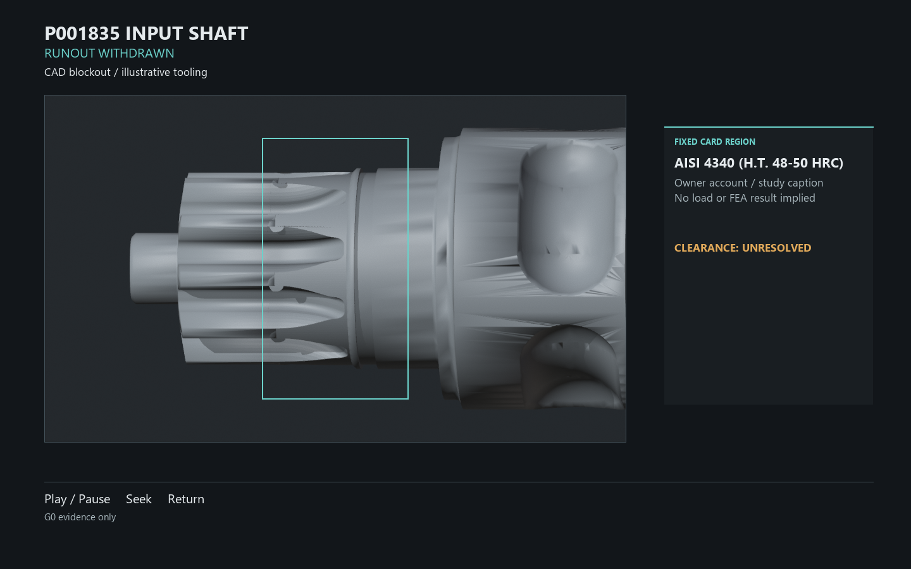
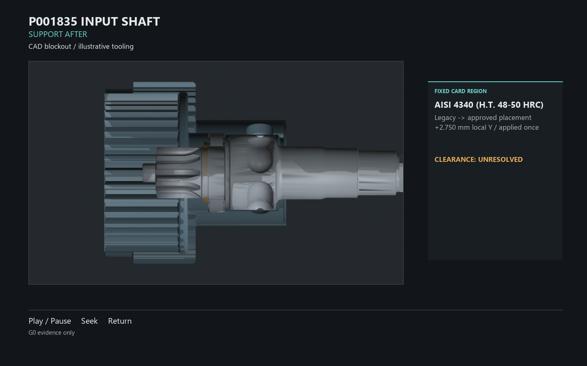
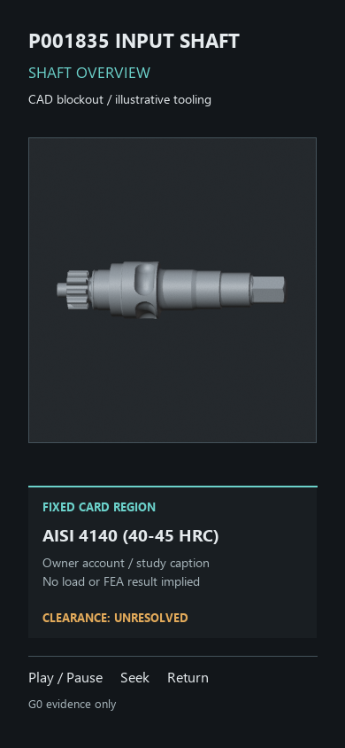
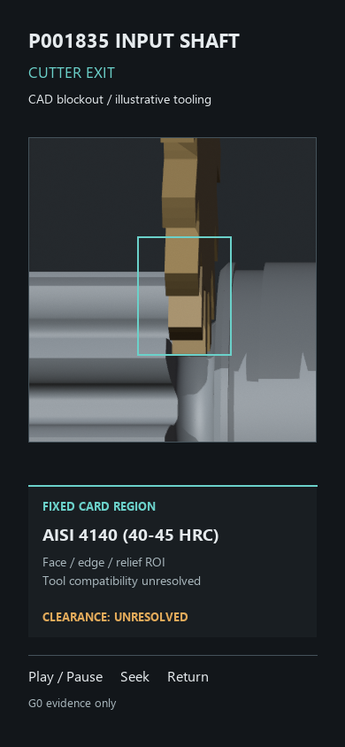
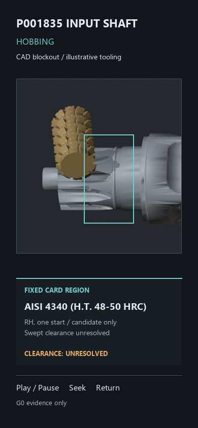
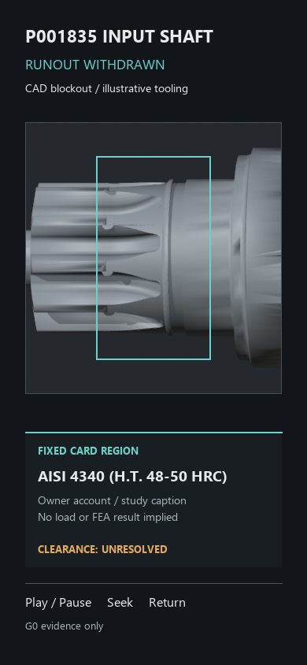
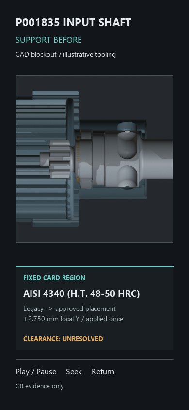
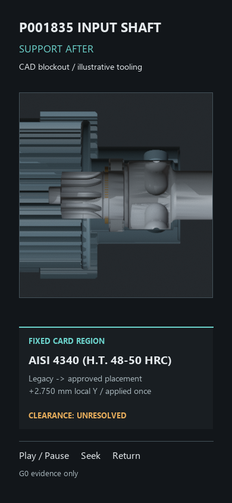